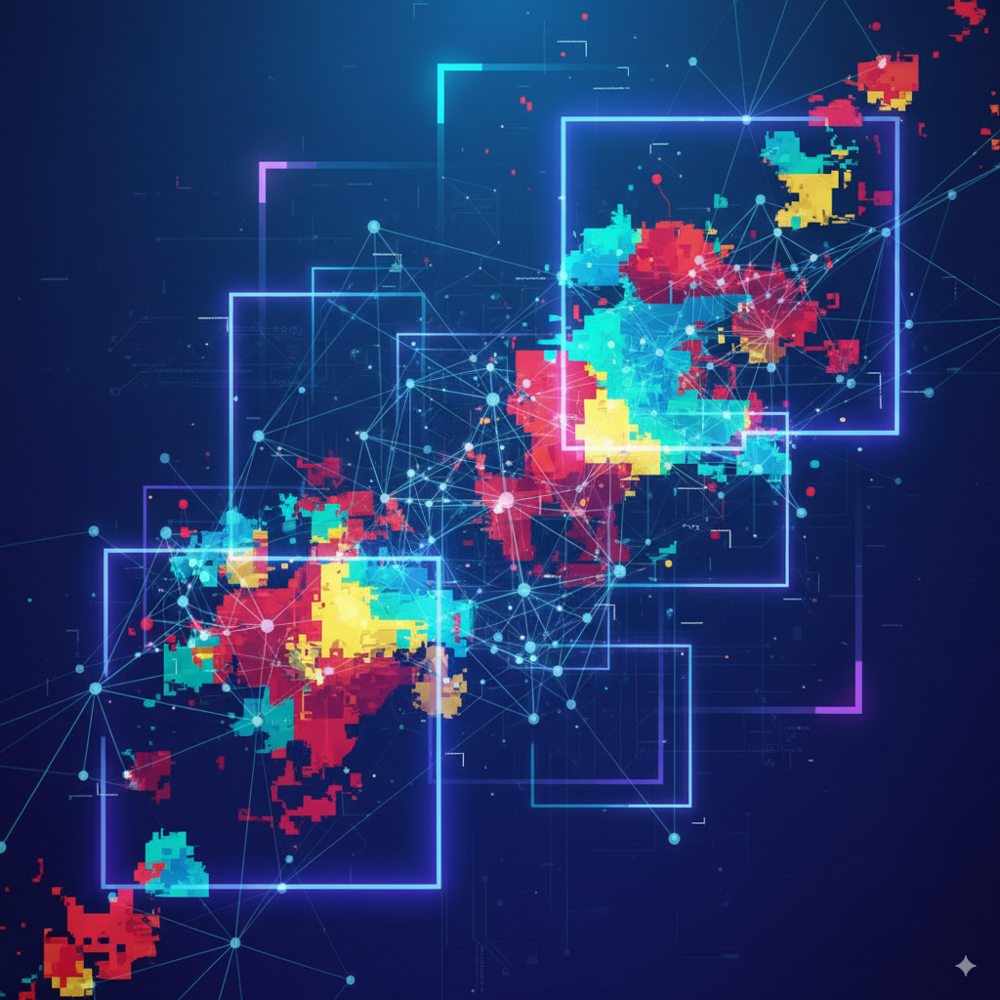

Beyond Bounding Boxes: A Deep Dive into Mask R-CNN for Instance Segmentation

In the evolution of computer vision, moving from image classification to object detection was a major leap. But what if a simple bounding box isn’t enough? Enter instance segmentation, the challenging task of not just detecting objects but also delineating their exact pixel-wise boundaries. In 2017, Kaiming He and his colleagues at Facebook AI Research (FAIR) introduced Mask R-CNN, a framework that solved this problem with remarkable simplicity and power. In this post, we’ll take a deep dive into this seminal paper to understand how it works and why it became a cornerstone of modern computer vision.
{kind=link}
The Abstract
{kind=link}
We present a conceptually simple, flexible, and general framework for object instance segmentation. Our approach efficiently detects objects in an image while simultaneously generating a high-quality segmentation mask for each instance.
Right away, the authors state their goal: to create a framework for instance segmentation. Let’s quickly define the key computer vision tasks to understand why this is important:
- Classification: Assigning a single label to an entire image (e.g., “This is a picture of a cat”).
- Object Detection: Identifying the location and class of objects using bounding boxes (e.g., “Here is a cat in this box, and a dog in this other box”). This is what models like Faster R-CNN excel at.
- Semantic Segmentation: Classifying every pixel in the image into a category (e.g., “These pixels are ‘cat’, these pixels are ‘grass’, and these are ‘sky’”). It doesn’t distinguish between different instances of the same object. If there are two cats, they are both just part of the “cat” pixel region.
- Instance Segmentation: This is the most challenging of the four. It combines the goals of object detection and semantic segmentation. The model must detect every object instance and provide a precise, pixel-level mask for each one (e.g., “Here is cat #1, and this is its exact outline. Here is cat #2, and this is its outline.”).
The authors’ first claim is that their framework is conceptually simple, flexible, and general. This is a bold statement. In research, “simple” is a high compliment. It implies elegance and power, suggesting the solution isn’t a collection of complex, engineered tricks (“bells and whistles,” as they say later), but a fundamentally sound idea.
The method, called Mask R-CNN, extends Faster R-CNN by adding a branch for predicting an object mask in parallel with the existing branch for bounding box recognition.
This is the “how.” They aren’t reinventing the wheel. They are building on the shoulders of a giant: Faster R-CNN, which was the state-of-the-art framework for object detection at the time. The R-CNN family (R-CNN, Fast R-CNN, Faster R-CNN) represented a lineage of powerful “two-stage” detectors. Mask R-CNN positions itself as the next logical evolution in this family.
The key architectural innovation is adding a new “branch” to the network. Imagine the Faster R-CNN model as a machine that looks at a proposed object region and has two experts shout out answers: one expert shouts the object’s class (“It’s a cat!”), and the other shouts adjustments to the bounding box (“Move it left a bit, make it taller!”). Mask R-CNN adds a third expert who works in parallel and paints a pixel-perfect mask of the object. This parallel, multi-task approach is central to its design.
We show top results in all three tracks of the COCO suite of challenges, including instance segmentation, bounding-box object detection, and person keypoint detection. Without bells and whistles, Mask R-CNN outperforms all existing, single-model entries…
This is the proof. The authors aren’t just saying their idea is elegant; they’re showing it dominates the competition on the most important benchmark dataset, COCO (Common Objects in Context). Not only does it win at instance segmentation, but the framework is so robust that it also sets a new state-of-the-art for standard object detection and can even be adapted for an entirely different task—human pose estimation. This demonstrates the “flexible and general” claim they made at the start.
In summary, the abstract tells a compelling story:
- The Problem: Instance segmentation is a hard but important task.
- The Idea: Intuitively extend the best object detector (Faster R-CNN) with a parallel mask-prediction branch.
- The Result: This simple idea is not only effective but beats all previous, more complex approaches on the premier academic benchmark.
1. Introduction
Setting the Stage: The Worlds of Detection and Segmentation
{kind=link}
{kind=link}
The authors begin by acknowledging the two parallel revolutions that were happening in computer vision: object detection and semantic segmentation. They credit two specific frameworks as the driving forces behind this progress: Faster R-CNN for detection and Fully Convolutional Networks (FCN) for segmentation. This is a crucial piece of context. These weren’t just two random models; they were the foundational architectures that defined their respective fields.
- Faster R-CNN: The pinnacle of the R-CNN family, it established the dominant paradigm for accurate object detection: a two-stage approach. First, a dedicated network proposes potential object regions (Regions of Interest, or RoIs). Second, another network classifies those regions and refines their bounding boxes. It was powerful, flexible, and the gold standard for accuracy.
- Fully Convolutional Network (FCN): This work revolutionized semantic segmentation by demonstrating how to convert image classification networks (like VGG) into models that could output a pixel-wise prediction for an entire image. By replacing dense layers with convolutions, FCNs could efficiently produce a “segmentation map” indicating the class of every single pixel.
The authors state that their goal is to create a framework for instance segmentation that is as “comparably enabling” as these two were for their fields. In other words, they aren’t just trying to get a slightly better score; they are aiming to build the new foundational model for this more complex task.
Instance segmentation is challenging because it requires the correct detection of all objects in an image while also precisely segmenting each instance. It therefore combines elements from the classical computer vision tasks of object detection… and semantic segmentation…
Here, the paper clearly defines the core challenge. Instance segmentation isn’t just a simple mashup of detection and segmentation; it’s an inheritor of the difficulties of both. You need the precision of semantic segmentation (getting the pixel boundaries right) combined with the instance-awareness of object detection (telling one object from another, even if they’re the same class and overlapping).
This framing is a key part of the paper’s narrative. The authors present a difficult, hybrid problem and then immediately hint that their solution will be “surprisingly simple.” This builds anticipation for the core technical contribution by suggesting that previous approaches may have been overly complex. They are setting the reader up to be impressed not just by the results, but by the elegance and simplicity of the method itself.
The Core Idea: Extending Faster R-CNN
After setting the stage, the authors present their solution, which is as elegant as it is effective.
Our method, called Mask R-CNN, extends Faster R-CNN [36] by adding a branch for predicting segmentation masks on each Region of Interest (RoI), in parallel with the existing branch for classification and bounding box regression (Figure 1).
This single sentence captures the entire architectural change. Let’s break it down using the diagram.
{kind=link}
Start with Faster R-CNN: The Mask R-CNN framework begins just like Faster R-CNN. An input image is fed through a backbone network (e.g., a ResNet) to generate a rich map of features. A Region Proposal Network (which we’ll cover later) then scans these features and suggests a set of candidate bounding boxes, or Regions of Interest (RoIs), where objects might be located.
Add a Parallel “Mask” Branch: For each RoI, the original Faster R-CNN had a “head” network with two branches that would answer two questions:
- Classification: What class of object is in this box? (e.g., ‘person’, ‘car’)
- Bounding Box Regression: How should we adjust this box to fit the object perfectly?
Mask R-CNN introduces a third branch that works in parallel to these two. This new “mask branch” answers a third question:
- Segmentation: What is the exact pixel-wise outline of the object within this box?
A Mini-FCN for Each Object: This new mask branch is not just a simple layer; it’s a small Fully Convolutional Network (FCN). As we discussed, FCNs are masters of semantic segmentation. By applying a lightweight FCN to each individual RoI, Mask R-CNN effectively runs a specialized segmentation model on every potential object. This is a brilliant fusion of the two worlds: a detection framework (Faster R-CNN) is used to isolate objects, and a segmentation model (the FCN branch) is used to draw their precise outlines.
The key takeaways from this design are its simplicity and efficiency. The authors didn’t have to design a complex, multi-stage pipeline. They simply attached a small, specialized module to an existing, high-performing framework. This adds minimal computational cost (a “small overhead”) while providing a massive leap in capability.
This parallel, multi-task approach is a cornerstone of deep learning, and Mask R-CNN is a perfect example of it done right.
The Devil’s in the Details: RoIAlign and Decoupled Masks
While the high-level concept is simple, the authors highlight two crucial implementation details that make Mask R-CNN truly effective.
1. Fixing Misalignment with RoIAlign
Most importantly, Faster R-CNN was not designed for pixel-to-pixel alignment between network inputs and outputs. This is most evident in how RoIPool… performs coarse spatial quantization for feature extraction.
This is the key insight. The original Faster R-CNN didn’t need to be pixel-perfect. Its final job was to draw a bounding box, a task that can tolerate small spatial inaccuracies. To handle RoIs of different sizes, Faster R-CNN used a process called RoIPool.
Imagine RoIPool as trying to fit a region of an image into a fixed-size grid (say, 7x7). To do this, it performs a series of rounding operations—it quantizes the coordinates. For example, a bounding box coordinate of 13.7 pixels might be rounded down to 13. This process, known as quantization, creates small but significant misalignments between the proposed region (the RoI) and the actual features extracted from the feature map.
For classifying an object or drawing a rough box around it, this tiny misalignment doesn’t matter much. But for generating a pixel-perfect mask, it’s a disaster. It’s like trying to trace a drawing on a piece of paper that keeps shifting slightly.
To fix the misalignment, we propose a simple, quantization-free layer, called RoIAlign, that faithfully preserves exact spatial locations.
The authors’ solution is RoIAlign. Instead of harshly rounding coordinates, RoIAlign uses bilinear interpolation—a standard technique for smoothly estimating pixel values at non-integer locations. This simple, “quantization-free” change ensures that the features extracted for an RoI are precisely aligned with the object’s location in the original image. As they note, this “seemingly minor change” has a massive impact, boosting mask accuracy by 10-50%.
2. Decoupling Mask and Class Prediction
The second critical design choice was to decouple the tasks of classification and segmentation.
…we predict a binary mask for each class independently, without competition among classes, and rely on the network’s RoI classification branch to predict the category.
This is a subtle but powerful idea. A more naive approach, borrowed from semantic segmentation FCNs, would be to have the mask branch predict a multi-class mask. In that scenario, for a given pixel inside a bounding box, the model would have to decide if it belongs to class ‘cat’, ‘dog’, ‘background’, etc. This forces the model to perform classification and segmentation simultaneously within the mask branch, creating competition between classes.
Mask R-CNN takes a smarter route. It assigns the job of classification solely to the dedicated classification branch. The mask branch, relieved of this duty, has a much simpler task: for the class that has already been chosen (“this is a person”), generate a binary mask that answers the question “Is this pixel part of the person or not?”
By predicting one binary mask for each of the possible classes and then letting the classification output select which one to use, the model avoids class competition. This division of labor makes the model easier to train and leads to significantly better results. It’s another example of the paper’s core philosophy: simple, elegant design choices often lead to the most powerful outcomes.
This concludes the introduction. We now have a complete picture of the problem, the high-level solution, and the critical technical details that make it work. Ready to move on to the next section of the paper?
A Trifecta of Success: Accuracy, Speed, and Generality
The introduction concludes by summarizing the three key pillars of Mask R-CNN’s success: its state-of-the-art performance, its practical efficiency, and its remarkable flexibility.
Without bells and whistles, Mask R-CNN surpasses all previous state-of-the-art single-model results on the COCO instance segmentation task [28], including the heavily-engineered entries from the 2016 competition winner.
This is the mic drop. The authors reiterate that their clean, simple approach not only works but decisively outperforms the previous best models, which often relied on complex, highly-tuned systems. As a bonus, the model’s training process, which learns to predict masks, also results in better features for the original task of object detection, making it a state-of-the-art detector as well.
The paper also highlights its practicality. At around 200ms per frame (5 fps) on a GPU from that era, and with a training time of just one or two days, the framework was not just an academic curiosity but a practical tool that researchers and engineers could immediately adopt, experiment with, and build upon.
Finally, we showcase the generality of our framework via the task of human pose estimation on the COCO keypoint dataset [28]. By viewing each keypoint as a one-hot binary mask, with minimal modification Mask R-CNN can be applied to detect instance-specific poses.
This final point is perhaps the most impressive. The authors demonstrate that Mask R-CNN is not just an instance segmentation model but a general framework for instance-level recognition. They adapt it to a completely different task: human pose estimation, which involves locating keypoints like elbows, knees, and shoulders for each person in an image.
How do you use a segmentation model to find a single point? The authors’ clever trick is to reframe the problem. They treat each keypoint (e.g., the ‘left shoulder’) as a tiny, one-pixel mask. The model is then trained to produce these “one-hot” masks for each keypoint type. This elegant adaptation works so well that it surpasses the specialized winner of the 2016 COCO keypoint competition. This achievement solidifies Mask R-CNN’s status as a powerful, flexible, and general-purpose vision tool.
{kind=link}
3. How Mask R-CNN Works
{kind=link}
A Simple Idea with a Subtle Challenge
At its heart, Mask R-CNN’s design is brilliantly simple and builds directly on the architecture of a proven champion in object detection.
Mask R-CNN is conceptually simple: Faster R-CNN has two outputs for each candidate object, a class label and a bounding-box offset; to this we add a third branch that outputs the object mask.
The authors emphasize that this is a natural extension. However, they immediately point out a critical distinction. The class label (e.g., “cat”) and the bounding box offset (e.g., “move x, y, w, h by these amounts”) can be collapsed into short, simple vector outputs. A segmentation mask is fundamentally different. It’s a 2D map of pixels that requires preserving the “finer spatial layout” of the object.
This need for spatial precision is where the subtle challenge lies. The architecture of Faster R-CNN, while perfect for the coarse task of drawing bounding boxes, wasn’t built for this kind of pixel-level accuracy. This section will show us how the authors addressed this “main missing piece.”
For Classification and Bounding Box Regression:
Classification: If your model needs to classify an object into one of 80 categories (like in the COCO dataset), the final output can be a vector of length 80. Each element in the vector corresponds to the probability of one class. For example,
[0.01, 0.95, 0.02, ..., 0.01]would mean the model is 95% sure the object is the second class in the list (e.g., “cat”). This is a very compact, “short” representation.Bounding Box Regression: A bounding box is defined by four numbers: its center coordinates (x, y) and its width and height (w, h). The network learns to predict small adjustments to an initial proposed box. So, the output is simply a vector of length 4
[dx, dy, dw, dh]. Again, this is a very short, simple vector.
These tasks are handled by fully-connected (fc) layers at the end of the network. An fc layer takes a feature map, flattens it into a long 1D vector, and then processes it to produce these final, short output vectors. In doing so, it loses all spatial information. It collapses the 2D structure of the features into a non-spatial list of numbers. For classification and box prediction, this is perfectly fine.
For Segmentation Masks:
A segmentation mask is fundamentally different. It’s not a short list of numbers; it’s a 2D grid of pixels. For an object that is, say, 28x28 pixels, the output needs to be a 28x28 grid where each pixel has a value (e.g., between 0 and 1) indicating the probability that it belongs to the object.
This requires preserving the spatial layout. You cannot flatten the features into a 1D vector and then try to reconstruct a 28x28 mask. The network architecture itself must maintain the pixel-to-pixel correspondence from the input features to the output mask. This is why the mask branch is built using convolutional layers (an FCN), which are designed to operate on 2D data and preserve spatial relationships.
A Quick Refresher: The Faster R-CNN Engine
Before we see how Mask R-CNN works, let’s quickly review the two-stage process of its predecessor, Faster R-CNN, as it forms the backbone of the entire system.
Faster R-CNN consists of two stages. The first stage, called a Region Proposal Network (RPN), proposes candidate object bounding boxes. The second stage… extracts features using RoIPool from each candidate box and performs classification and bounding-box regression.
The process can be broken down as follows:
Stage 1: The Region Proposal Network (RPN). First, the image is passed through a deep convolutional network (the “backbone”) to create a high-level feature map. The RPN, a small dedicated network, then slides across this feature map and proposes a set of Regions of Interest (RoIs) where objects are likely to be located. This is the “where to look” stage. It’s fast and class-agnostic; it just finds things that look like objects.
Stage 2: The Network Head. For each RoI proposed by the RPN, the second stage takes over. It uses a technique called RoIPool to extract a small, fixed-size feature map from the larger feature map for that specific region. This small feature map is then fed into the “head,” which has two parallel branches to predict the object’s class and refine the bounding box coordinates. This is the “what is it and where is it exactly” stage.
This powerful two-stage design is what Mask R-CNN inherits. The entire first stage (the RPN) is kept identical. The innovation happens in the second stage.
The Mask R-CNN Architecture and its Multi-Task Loss
The core architectural change, as we’ve discussed, is adding a new branch to the second stage of Faster R-CNN.
Mask R-CNN adopts the same two-stage procedure, with an identical first stage (which is RPN). In the second stage, in parallel to predicting the class and box offset, Mask R-CNN also outputs a binary mask for each RoI.
The authors re-emphasize the parallel nature of their design. This is a deliberate contrast to competing methods where the tasks were performed sequentially (e.g., predict a mask, then classify it). This parallel approach, inspired by Fast R-CNN, simplifies the entire pipeline. The model makes three predictions for each object candidate simultaneously: its class, its bounding box, and its mask.
To train a model that performs three tasks at once, we need a way to combine the errors from all three tasks into a single, unified signal that can be used for backpropagation. This is done with a multi-task loss function.
Formally, during training, we define a multi-task loss on each sampled RoI as
L = L_cls + L_box + L_mask.
This is the mathematical formulation of the training objective. For each proposed object (RoI), the total error (L) is simply the sum of the errors from the three branches:
L_cls: The classification loss. This measures how wrong the class prediction was (e.g., predicting “dog” when it was a “cat”).L_box: The bounding box loss. This measures how inaccurate the box coordinates were.L_mask: The mask loss. This is the new component, which measures the error in the predicted segmentation mask.
The classification and box losses are identical to those used in Faster R-CNN. The innovation lies in defining L_mask.
The mask branch has a
K * m²-dimensional output for each RoI, which encodesKbinary masks of resolutionm x m, one for each of theKclasses. … For an RoI associated with ground-truth classk,L_maskis only defined on thek-th mask…
This is the implementation of the “decoupled mask” idea we discussed earlier. Let’s break it down. Suppose there are K=80 possible object classes and the mask branch is designed to output small m x m (e.g., 28x28) masks.
- For a single RoI, the mask branch doesn’t just output one 28x28 mask. It outputs 80 separate 28x28 masks—one for every possible class.
- During training, let’s say the RoI contains an object that is known to be a “person” (class
k). The model calculates the mask loss (L_mask) by comparing only the predicted “person” mask to the ground-truth person mask. - The other 79 masks predicted by the mask branch for that RoI are completely ignored. They do not contribute to the loss for this specific training example.
This design is highly efficient. The model learns to generate good masks for each class independently, without the signals getting mixed up. The job of deciding which of the 80 masks to ultimately use is left to the classification branch. This clever division of labor is a key reason for the model’s high accuracy.
Decoupling Masks and Classes: Sigmoid vs. Softmax
Our definition of
L_maskallows the network to generate masks for every class without competition among classes; we rely on the dedicated classification branch to predict the class label used to select the output mask. This decouples mask and class prediction.
Here, the authors explicitly state the benefit of their loss function design: it eliminates competition among classes within the mask prediction task. To understand why this is so important, we need to compare their approach to the standard practice for semantic segmentation.
This is different from common practice when applying FCNs [30] to semantic segmentation, which typically uses a per-pixel softmax and a multinomial cross-entropy loss. In that case, masks across classes compete; in our case, with a per-pixel sigmoid and a binary loss, they do not.
This distinction between softmax and sigmoid is a critical technical detail.
Softmax (The Competing Approach): A softmax function is used for multi-class classification where only one answer can be correct. It takes a vector of scores and squashes them into probabilities that all sum to 1. In a typical FCN for semantic segmentation, for every single pixel, the network would predict a score for each class (e.g., ‘cat’, ‘dog’, ‘sky’). The softmax function then forces the pixel to “choose” a class. If the probability of being ‘cat’ goes up, the probability of being ‘dog’ or ‘sky’ must go down. This creates direct competition.
Sigmoid (The Independent Approach): A sigmoid function takes a single score and squashes it to a value between 0 and 1. It is used for binary classification (yes/no). By applying a sigmoid independently to each of the
Kclass-specific masks, Mask R-CNN frames the problem differently. For the “cat” channel of the mask branch, each pixel’s sigmoid output answers the question: “What is the probability that this pixel is part of a cat?” This probability is calculated completely independently of the probability of it being part of a “dog”.
By using a sigmoid, Mask R-CNN lets the mask branch focus exclusively on defining the shape of an object, given its class. The classification branch handles the high-level task of identifying the object’s class. This clean separation of concerns, or decoupling, is a cornerstone of the model’s success. It simplifies the learning process and, as the authors show in their experiments, leads to substantially better results for instance segmentation.
Imagine the Mask R-CNN head is a team of specialists evaluating a single object candidate (an RoI).
- The Classifier: A single expert who looks at the RoI and shouts out the object’s class. “That’s a cat!”
- The Box Regressor: Another expert who adjusts the bounding box. “Move it 2 pixels left and make it 5 pixels taller.”
- The Mask Department: This isn’t one person; it’s a room full of 80 different artists (one for each class in the COCO dataset). Each artist is a specialist.
- Artist #1 only knows how to draw people.
- Artist #2 only knows how to draw cars.
- …
- Artist #5 only knows how to draw cats.
- …and so on.
When an RoI comes in, all 80 artists draw a mask simultaneously. Artist #5 draws what they think the cat’s outline should be. Artist #2 draws what they think a car’s outline would be in that spot. They all produce a mask based on their specialty.
Now, let’s see how this team is trained.
The Training Process (For a Single RoI)
Let’s say our training data has an RoI that we know contains a cat. The ground-truth label is “cat” (class #5), and we have the perfect, pixel-accurate ground-truth mask for that cat.
The RoI is fed to the model, and it makes its predictions:
- The classifier predicts a class.
- The box regressor predicts offsets.
- The Mask Department produces 80 separate masks.
Now, we calculate the loss to see how wrong the model was.
L_cls(Classification Loss): We check the Classifier’s prediction. Did it say “cat”? If it said “dog,” it gets a high loss. If it said “cat,” it gets a low loss.L_box(Box Loss): We check the Box Regressor’s adjustments. Are they correct? The loss is based on how far off the predicted box is from the ground-truth box.L_mask(Mask Loss) - The Crucial Step: This is where the magic happens.- The Switch: We look at the ground-truth label for the RoI. The label is “cat” (class #5).
- The Selection: This label tells us to go to our Mask Department and only evaluate Artist #5 (the cat specialist).
- The Comparison: We take the mask drawn by Artist #5 and compare it, pixel-by-pixel, to the ground-truth cat mask. The loss (
L_mask) is calculated based only on the errors in this single mask. - The Others are Ignored: The masks drawn by the “person” artist, the “car” artist, and all the other 78 artists are completely ignored. They contribute zero to the loss for this training example.
In essence, the ground-truth class label acts as a switch. It selects which one of the K predicted masks is the relevant one to use for calculating the loss.
Why This Works So Well
This method decouples the tasks.
- The “cat mask” artist (Artist #5) is only ever trained to get better at drawing cats. It never gets penalized for the object not being a cat—that’s the Classifier’s job.
- Its sole responsibility is: If this object is a cat, what is its shape?
- This makes the learning task for each of the 80 mask “artists” much simpler and more focused, leading to higher-quality masks.
During inference (when using the trained model), the process is reversed:
- The Classifier looks at an RoI and says “I’m 98% sure that’s a cat.”
- Based on this decision, we go to the Mask Department and retrieve the mask drawn by Artist #5.
- We present that mask as the final output and discard the other 79.
Mask Representation: Why Convolutions are Key
{kind=link}
As we’ve discussed, predicting a mask is fundamentally different from predicting a class label or a bounding box. A mask is an image, not a number, and therefore requires an architecture that respects its spatial nature.
A mask encodes an input object’s spatial layout. Thus, unlike class labels or box offsets that are inevitably collapsed into short output vectors by fully-connected (fc) layers, extracting the spatial structure of masks can be addressed naturally by the pixel-to-pixel correspondence provided by convolutions.
This gets to the core of the architectural choice. Fully-connected (fc) layers, which are used for classification and box regression in Faster R-CNN, destroy spatial information. They take a 2D feature map, flatten it into a long 1D vector, and lose all sense of “up,” “down,” “left,” and “right.” This is fine for predicting a single class label, but it’s the wrong tool for drawing a shape.
Convolutional layers, on the other hand, are designed to preserve spatial layout. A convolution operates on a local neighborhood of pixels and produces an output that maintains the grid structure. This makes them the natural choice for the job.
Specifically, we predict an
m x mmask from each RoI using an FCN [30]. This allows each layer in the mask branch to maintain the explicitm x mobject spatial layout without collapsing it…
The authors implement the mask branch as a small Fully Convolutional Network (FCN). This means the branch is built entirely from convolutional layers, ensuring that the 2D spatial structure is maintained from the input RoI features all the way to the final output mask. This is more efficient (fewer parameters) and more accurate than previous approaches that tried to use fc layers to predict masks.
However, this leads to a crucial dependency. An FCN can only produce an accurate output if its input is also spatially accurate.
This pixel-to-pixel behavior requires our RoI features… to be well aligned to faithfully preserve the explicit per-pixel spatial correspondence. This motivated us to develop the following RoIAlign layer…
This is the final piece of the puzzle. The FCN-based mask branch is the right tool, but it’s sensitive to the quality of its input. If the input features given to it are slightly misaligned—as they were with the old RoIPool method—the FCN will diligently produce a beautifully detailed mask in a slightly wrong location.
To make the FCN branch truly effective, the authors first had to fix this underlying alignment problem. This necessity is what gave birth to RoIAlign, the seemingly small change that unlocked the full potential of the mask branch.
RoIAlign: The Key to Pixel-Perfect Precision
The authors now detail the technical fix that makes high-quality instance segmentation possible. To appreciate the solution, we must first deeply understand the problem it solves.
The Problem: “Harsh Quantization” in RoIPool
RoIPool [12] is a standard operation for extracting a small feature map (e.g., 7×7) from each RoI. RoIPool first quantizes a floating-number RoI to the discrete granularity of the feature map… These quantizations introduce misalignments between the RoI and the extracted features.
The core issue with the standard RoIPool layer is that it performs what the authors call “harsh quantization.” This is a fancy term for rounding. Because a convolutional network’s feature map is a discrete grid, while the proposed RoIs can have continuous, floating-point coordinates, RoIPool forces everything to snap to the grid. This happens in two places:
- Rounding the RoI Boundaries: An RoI might have a boundary at
x = 234.56. If the feature map has a stride of 16 (meaning one “pixel” on the feature map corresponds to a 16x16 block in the original image), RoIPool might calculate the coordinate as234.56 / 16 = 14.66and then round it to15. This small act of rounding shifts the RoI’s boundary. - Rounding the Bin Boundaries: After snapping the RoI to the grid, RoIPool divides it into a fixed number of bins (e.g., 7x7). If the quantized RoI’s width isn’t perfectly divisible by 7, the boundaries of these internal bins are also rounded.
This repeated rounding introduces small but significant errors, causing a misalignment between the features being extracted and the actual location of the object. For object detection, which only needs a bounding box, this was acceptable. But for instance segmentation, which needs to be pixel-perfect, it was a critical flaw.
The Solution: A Quantization-Free Approach
To address this, we propose an RoIAlign layer that removes the harsh quantization of RoIPool, properly aligning the extracted features with the input. Our proposed change is simple: we avoid any quantization…
Instead of rounding, RoIAlign uses a standard and much more elegant technique: bilinear interpolation. Let’s walk through the process using Figure 3 as our guide.
{kind=link}
- No Rounding: The RoI (the solid black rectangle) is placed over the feature map (the dashed grid). Its coordinates are kept as floating-point numbers. It is not snapped to the grid.
- Define Sampling Points: The RoI is divided into the target number of bins (2x2 in the example). Within each bin, a number of sampling points are defined (4 in this case, shown as black dots). The locations of these sampling points are also calculated with floating-point precision.
- Interpolate Values: For each sampling point, we find its value not by rounding, but by looking at the four nearest grid points on the feature map. We then calculate a weighted average of these four values based on the sampling point’s distance to each. This is bilinear interpolation. It allows us to estimate the feature value at any continuous point on the map.
- Aggregate: Finally, the values from all the sampling points within a bin are aggregated (e.g., by averaging or taking the max) to produce the final output value for that bin.
By completely avoiding any rounding, RoIAlign ensures that the extracted features are perfectly aligned with the object’s location in the input image.
The authors drive this point home by comparing their method to a similar one called RoIWarp. RoIWarp also used bilinear interpolation, but it critically made the mistake of performing the initial rounding of the RoI boundaries, just like RoIPool. Their experiments show it performed no better than RoIPool, proving that the alignment was the crucial factor, not just the interpolation method.
Network Architecture: The Building Blocks
To demonstrate the flexibility of their framework, the authors instantiate Mask R-CNN using two different powerful architectures. To understand these, we first need to differentiate between two key components of the model:
- The Backbone: This is the feature extraction network. It acts as the “eyes” of the model, processing the entire input image and converting it into a rich set of feature maps that capture everything from simple edges and textures to complex object parts. This part of the network is large and is typically pre-trained on a massive dataset like ImageNet. The authors experiment with backbones like ResNet and the more advanced Feature Pyramid Network (FPN).
- The Head: This is the smaller network that is applied to each individual Region of Interest (RoI). It takes the features extracted by the backbone for a specific region and performs the final tasks: classification, bounding box regression, and now, mask prediction.
Figure 4 shows two different head designs, each corresponding to a different backbone choice.
{kind=link}
The ResNet-C4 Head (Figure 4, Left)
This is the more straightforward design.
- Backbone: A standard ResNet that extracts features from the 4th stage of the network (hence “C4”).
- Head Architecture:
- Box/Class Branch (Top): The features from the RoI are first passed through the entire 5th stage of ResNet (“res5”). This is a very deep and computationally heavy block of layers. The output is then averaged and fed into fully-connected layers to produce the final class and box predictions.
- Mask Branch (Bottom): The new mask branch is a simple and lightweight FCN. It takes the RoI features before they enter the heavy
res5block and processes them through a couple of convolutional layers to produce the final14x14mask.
The key takeaway here is the asymmetry: the box prediction branch is very deep and heavy, while the mask branch is light and fast.
The Feature Pyramid Network (FPN) Head (Figure 4, Right)
This architecture uses a more advanced and efficient backbone.
- Backbone: A Feature Pyramid Network (FPN). An FPN is a smarter backbone design that produces feature maps at multiple scales. This allows the network to use high-resolution features for detecting small objects and more abstract, semantic features for large objects, improving both speed and accuracy. Critically, an FPN backbone already incorporates the work of
res5. - Head Architecture:
- Box/Class Branch (Top): Because the FPN backbone has already done the heavy lifting, the head can be much lighter. It now consists of just a couple of fully-connected layers.
- Mask Branch (Bottom): The mask branch is a slightly deeper FCN. It consists of a stack of four convolutional layers, followed by a deconvolution layer. A deconvolution (or transposed convolution) is a layer that upsamples its input, increasing the spatial resolution. This allows the head to take in
14x14features and output a more detailed28x28mask.
This FPN-based design is superior. It’s more efficient because the head is much lighter, and it’s generally more accurate because the FPN backbone provides better features and the mask branch can produce a higher-resolution output. As the authors state, “the FPN backbone… allows for a more efficient head that uses fewer filters.” This is the architecture they will primarily use to achieve their state-of-the-art results.
3.1. Implementation Details
While the high-level concepts are elegant, a model’s performance often comes down to the nitty-gritty details of its implementation. The authors are careful to base their choices on established best practices from prior work, underscoring the robustness of their approach.
Training the Model
The training process involves teaching the model’s three branches (classification, box regression, and mask prediction) simultaneously. This is guided by a set of carefully chosen rules and parameters.
- Defining a “Good” Proposal: During training, the RPN generates thousands of potential RoIs. To train the head, we need to label them as either “foreground” (an object) or “background.” This is done using the Intersection over Union (IoU) metric, which measures the overlap between a proposed RoI and a ground-truth object box. An RoI is considered a positive example if its IoU is 0.5 or greater; otherwise, it’s a negative.
- Focused Mask Training: Crucially, the mask loss (
L_mask) is only calculated for the positive RoIs. This makes intuitive sense: the model should only learn to draw a mask for regions that are known to contain an object. - Data and Sampling:
- The authors use “image-centric” training. Images are resized so their shorter edge is 800 pixels—a common practice that balances detail and computational cost.
- In each training batch, they don’t use all the thousands of RoIs from an image. Instead, they sample a fixed number (
N) of RoIs to ensure a balanced mix of positive and negative examples (a 1:3 ratio). This prevents the model from being overwhelmed by the vast number of easy “background” regions.
- Standard Hyperparameters: The learning rate, weight decay, and momentum are all set to standard values used in previous papers. This demonstrates that Mask R-CNN doesn’t require finicky, specialized tuning to work well; it’s a fundamentally stable framework.
Inference: From Proposals to Masks
The process for making a prediction on a new image at test time is slightly different from training, and is optimized for speed and accuracy.
- Proposals: The RPN first generates a large number of proposals (e.g., 1000 for the FPN-based model).
- Box Predictions: The fast classification and box regression branches are run on all 1000 of these proposals.
- Filtering with Non-Maximum Suppression (NMS): Often, the model will predict several, highly-overlapping boxes for the same object. NMS is a critical post-processing step that cleans this up. It selects the box with the highest confidence score and suppresses all other boxes that have a high IoU with it. This leaves only the single best bounding box for each detected object.
- Mask Predictions on the Best Detections: Here is a key efficiency trick. Instead of running the more computationally intensive mask branch on all 1000 proposals, it is only run on the top 100 highest-scoring boxes that remain after NMS.
This sequential process is slightly different from the parallel training, but it’s much faster. It also improves accuracy, as the mask branch can focus its efforts only on the object candidates that the model is already very confident about.
4.1. The Main Results
The primary benchmark for this task is the challenging COCO (Common Objects in Context) dataset. To understand the results in Table 1, we first need to understand the main metric used to evaluate performance.
The metric is Average Precision (AP), a standard for segmentation and detection tasks. Here’s a simple way to think about it:
- Intersection over Union (IoU): For any predicted mask, we can measure how well it overlaps with the ground-truth mask. This overlap score, from 0 (no overlap) to 1 (perfect overlap), is the IoU. You can think of it as a “grade” for a single prediction.
- AP (Average Precision): Instead of just using one IoU threshold to decide if a prediction is correct (e.g., IoU > 0.5), the main COCO metric calculates the model’s performance over a range of IoU thresholds, from 0.5 up to 0.95. A model only gets a high AP score if its masks are accurate at both lenient and very strict overlap requirements.
- Metric Variants: The table also reports
AP50(AP at the lenient 0.5 IoU threshold),AP75(AP at a much stricter 0.75 threshold), and AP for small, medium, and large objects (APS,APM,APL).
With that in mind, let’s look at the results in Table 1.
{kind=link}
The table compares different versions of Mask R-CNN against the previous state-of-the-art models, including MNC (the 2015 COCO challenge winner) and FCIS (the 2016 winner).
The results are a decisive victory for Mask R-CNN:
- The best version of the competitor model, FCIS+++, achieves an AP of 33.6. This model was highly engineered and used extra tricks like multi-scale testing and online hard example mining (OHEM).
- The baseline Mask R-CNN with a ResNet-101-FPN backbone, without any of these bells and whistles, achieves an AP of 35.7.
- Using an even better backbone, ResNeXt-101-FPN, Mask R-CNN reaches an AP of 37.1. This is a massive 3.5 point jump over the previous state-of-the-art, which is a huge margin in a mature research area.
The improvement is even more dramatic when looking at the stricter AP75 metric. Mask R-CNN achieves 39.4, showcasing its ability to produce highly precise, well-aligned masks—a direct result of the RoIAlign layer.
Qualitative Results: A Picture is Worth a Thousand Numbers
The quantitative results are impressive, but the qualitative results in Figure 6 tell an even clearer story. The figure directly compares Mask R-CNN to its strongest competitor, FCIS, on images with heavy object overlap.
{kind=link}
The top row shows that FCIS fundamentally struggles when objects of the same class are close together. The masks tend to “bleed” into each other, creating strange artifacts and spurious edges. This is a visual confirmation of the weakness of its “segmentation-first” approach.
The bottom row shows Mask R-CNN handling these same scenes flawlessly. Because its “instance-first” approach isolates each object before generating its mask, it has no trouble distinguishing between the overlapping umbrellas or the closely packed people. The boundaries are clean, and each object is perfectly delineated.
In summary, the evidence is overwhelming. Through both quantitative metrics and qualitative examples, the authors demonstrate that Mask R-CNN is not just a marginal improvement but a significant leap forward in instance segmentation.
4.2. Ablation Experiments
An “ablation study” is a series of experiments where you systematically remove or modify individual components of your model to see how performance changes. It’s like a mechanic taking an engine apart piece by piece to understand what each part does. These experiments are crucial because they validate the authors’ design choices and prove that their success isn’t due to a single lucky factor, but to a series of well-reasoned architectural decisions.
The authors perform several key ablations, with the results summarized in Table 2.
{kind=link}
Backbone Architecture
The Question: Does the Mask R-CNN framework benefit from more powerful backbone networks?
The Result (Table 2a): Yes. The performance consistently improves with deeper networks (ResNet-101 is better than ResNet-50) and more advanced architectures (FPN is better than C4, and ResNeXt is better still).
The Takeaway: This shows that Mask R-CNN is a robust and general framework. Its performance isn’t tied to one specific network; it can leverage ongoing improvements in the broader field of deep learning to get even better.
Multinomial vs. Independent Masks
The Question: Was our decision to “decouple” mask and class prediction (using a per-pixel sigmoid) actually better than the standard approach from semantic segmentation (using a per-pixel softmax)?
The Result (Table 2b): The decoupled approach is massively better, improving the AP by 5.5 points.
The Takeaway: This is a critical validation of one of the paper’s core design principles. Forcing the mask branch to compete between classes (softmax) hurts performance badly. The authors’ simpler approach—predicting a binary mask for each class independently (sigmoid) and letting the classification branch choose—is far more effective. It proves that for instance segmentation, it’s better to separate the “what is it?” question from the “what is its shape?” question.
Class-Specific vs. Class-Agnostic Masks
The Question: Does the model need to learn a unique mask predictor for each class (e.g., one for ‘person’, one for ‘car’), or can it learn a single, general-purpose “object” mask predictor?
The Result (Text): Interestingly, a class-agnostic model (predicting just one mask per RoI) performs almost as well as the class-specific one (29.7 AP vs 30.3 AP).
The Takeaway: This fascinating result further highlights the power of decoupling. It suggests that the mask branch’s main job is simply to distinguish foreground from background within a given box. The heavy lifting of identifying the object’s class is almost entirely handled by the classification branch.
RoIAlign
The Question: How much does RoIAlign actually help, and is it really better than RoIPool or similar methods like RoIWarp?
The Result (Table 2c & 2d): RoIAlign provides a huge boost.
- It improves AP by about 3 points over RoIPool on a standard backbone, with the biggest gains coming at the stricter
AP75metric (a 5-point jump). This directly proves its superior localization accuracy. - The comparison to RoIWarp is damning. RoIWarp, which used interpolation but still quantized the RoI boundaries, performs no better than RoIPool. This proves that proper alignment is the key, not just the interpolation method.
- On a backbone with a very large stride (32 pixels), where misalignment is an even bigger problem, RoIAlign improves AP by a massive 7.3 points.
The Takeaway: This is the knockout punch. These results provide undeniable proof that RoIAlign is the secret sauce that enables high-precision segmentation. It solves a fundamental flaw in previous models and is the paper’s most significant technical contribution.
Mask Branch: FCNs vs. MLPs
The Question: Is a Fully Convolutional Network (FCN) really the right architecture for the mask branch, or could we have used standard fully-connected layers (an MLP)?
The Result (Table 2e): The FCN is significantly better, providing a 2.1 point AP gain over an MLP-based head.
The Takeaway: This confirms the authors’ intuition. Predicting a mask is an inherently spatial task. MLPs, which collapse spatial information into a 1D vector, are the wrong tool for the job. FCNs, which preserve the 2D spatial layout using convolutions, are far more effective at predicting accurate pixel masks.
4.3. Bounding Box Detection Results
Having proven that Mask R-CNN is the new champion of instance segmentation, the authors now turn their attention back to the original task of object detection. The experiment is simple: they train the full Mask R-CNN model, but at inference time, they simply ignore the mask output and only use the predicted class and bounding box. The results, shown in Table 3, are remarkable.
{kind=link}
The results in Table 3 show that Mask R-CNN isn’t just a great segmentation model; it’s a phenomenal detection model. The best version, using a ResNeXt-101-FPN backbone, achieves a bounding box AP of 39.8. This comfortably beats the previous best single-model result of 36.8 from the winner of the 2016 COCO Detection Challenge.
This raises a critical question: where does this significant improvement come from? The authors perform a brilliant on-the-fly ablation study to dissect the sources of the performance gain.
1. The Power of RoIAlign
As a further comparison, we trained a version of Mask R-CNN but without the mask branch, denoted by “Faster R-CNN, RoIAlign” in Table 3. This model performs better than the model presented in [27] due to RoIAlign.
First, they show that RoIAlign itself improves bounding box detection. Simply replacing the old RoIPool layer in a standard Faster R-CNN with RoIAlign boosts the box AP by 1.1 points. This makes perfect sense: features that are better aligned with the object lead to more accurate localization, which helps with bounding boxes, not just masks.
2. The Magic of Multi-Task Training
On the other hand, it is 0.9 points box AP lower than Mask R-CNN. This gap … is therefore due solely to the benefits of multi-task training.
This is the most interesting insight. The “Faster R-CNN, RoIAlign” model is identical to the full Mask R-CNN model in every way except that it isn’t trained with the mask branch. The full Mask R-CNN model is 0.9 AP points better.
This improvement is a direct result of multi-task learning. The process of forcing the network to also learn how to generate accurate masks acts as a powerful form of regularization. It encourages the backbone to learn richer, more detailed, and more spatially aware features. These superior features, in turn, benefit the other two tasks, leading to better classification and more accurate bounding box regression. It’s like learning to paint makes you better at sketching; the more challenging task enforces a deeper understanding that helps with the simpler one.
Closing the Gap
Lastly, we note that Mask R-CNN attains a small gap between its mask and box AP: e.g., 2.7 points between 37.1 (mask, Table 1) and 39.8 (box, Table 3). This indicates that our approach largely closes the gap between object detection and the more challenging instance segmentation task.
This is the final, powerful conclusion. Historically, instance segmentation was considered a much harder problem than object detection, and performance on it lagged far behind. With Mask R-CNN, the gap between the two tasks has shrunk dramatically. The model is almost as good at predicting the exact, pixel-perfect outline of an object as it is at just drawing a simple box around it—a truly remarkable achievement.
4.4. Timing
A state-of-the-art model is of little use if it takes an hour to process a single image or a month to train. The authors conclude their experiments by demonstrating that Mask R-CNN is not only accurate but also highly efficient, making it a practical tool for both research and application.
Inference Speed: Fast Enough for Real-World Use
We train a ResNet-101-FPN model… This model runs at 195ms per image on an Nvidia Tesla M40 GPU…
At inference time, the recommended FPN-based model is impressively fast. 195ms per image translates to roughly 5 frames per second (fps) on a high-end GPU from that era. While not quite real-time (often considered 30 fps), this is fast enough for many practical applications, such as offline video processing or robotics, and represents a massive leap for a model performing such a complex task.
The authors also give a crucial piece of practical advice:
We also report that the ResNet-101-C4 variant takes ~400ms as it has a heavier box head… so we do not recommend using the C4 variant in practice.
This confirms that the more modern FPN backbone is not only more accurate but also twice as fast as the older ResNet-C4 design, making it the clear choice for any application.
Training Speed: Enabling Rapid Research
Perhaps even more important than its inference speed was the model’s training time. In deep learning, the speed of experimentation is dictated by how quickly you can train a model and see the results.
Mask R-CNN is also fast to train. Training with ResNet-50-FPN on COCO trainval35k takes 32 hours in our synchronized 8-GPU implementation… We hope such rapid training will remove a major hurdle in this area and encourage more people to perform research on this challenging topic.
Training a state-of-the-art vision model from scratch on a massive dataset like COCO in just 32 hours was a significant breakthrough. In an era where complex models could often take weeks to train, this was a game-changer. It meant that researchers or students could have an idea, implement it, and see the results of a full-scale experiment in a little over a day.
This rapid training cycle dramatically lowered the barrier to entry for research in instance segmentation, fulfilling the authors’ hope of enabling “fast prototyping” and accelerating the pace of innovation in the field.
5. Mask R-CNN for Human Pose Estimation
To showcase the true power and generality of their framework, the authors take on a completely different challenge: human pose estimation. This is the task of identifying the location of specific keypoints (like ‘left shoulder’, ‘right elbow’, ‘left knee’) for every person in an image.
By showing that their model can excel at this task with minimal modifications, they elevate Mask R-CNN from a simple segmentation tool to a general-purpose framework for instance-level recognition.
The Core Idea: Keypoints as One-Hot Masks
The conceptual leap required to adapt Mask R-CNN for this task is both simple and brilliant.
We model a keypoint’s location as a one-hot mask, and adopt Mask R-CNN to predict
Kmasks, one for each ofKkeypoint types…
How does this work? Imagine you need to predict the location of a person’s ‘left shoulder’. Instead of predicting an (x, y) coordinate, the model is trained to predict a small binary mask (e.g., 56x56) where only a single pixel is “on” (has a value of 1) and all other pixels are “off” (have a value of 0). This single “on” pixel marks the precise location of the keypoint. This is a “one-hot” representation in a 2D space.
This clever reframing allows the pose estimation problem to fit perfectly into the Mask R-CNN architecture:
- The
Kdifferent keypoint types (left shoulder, right elbow, etc.) are treated exactly like theKdifferent object classes in the original task. - The model’s mask branch is trained to output
Kof these one-hot masks for each detected person. - The classification branch from Faster R-CNN (which is trained to detect ‘person’) is used to identify the instances, and the new keypoint head then predicts the pose for each one.
Implementation and Architectural Tweaks
While the core idea is a simple adaptation, a few minor modifications are needed to optimize for the extreme precision required by keypoint detection.
- Higher Resolution Output: The keypoint head is designed to output a higher resolution mask (
56x56) compared to the standard segmentation branch (28x28). This is crucial for localizing a single pixel with pinpoint accuracy. - Loss Function: Instead of using a per-pixel sigmoid, the model uses a softmax over the entire
56x56mask. This makes intuitive sense: for a keypoint, you are trying to find exactly one correct location out of all the possible pixels. A softmax forces the model to put all its probability on a single pixel, encouraging it to make a single, decisive prediction.
Results: A Unified, State-of-the-Art System
{kind=link}
{kind=link}
{kind=link}
The results of this experiment are stunning and serve as the final proof of the framework’s power.
- Beating the Competition (Table 4): The Mask R-CNN model achieves a keypoint AP of 63.1, which is higher than the winner of the 2016 COCO keypoint competition. Importantly, the winning model was a complex, multi-stage pipeline, whereas Mask R-CNN is a single, unified, and much simpler system.
- A Truly Unified Model (Table 5): The authors demonstrate that they can train a single model that simultaneously predicts bounding boxes, segmentation masks, and human keypoints, all while running at 5 fps. This is the ultimate expression of the framework’s flexibility. Furthermore, they find that multi-task learning helps here too: adding the segmentation mask branch slightly improves the accuracy of keypoint detection.
- The Critical Role of RoIAlign (Table 6): If there was any doubt about the importance of RoIAlign, this section erases it. For the ultra-precise task of keypoint localization, RoIAlign provides a massive 4.4 point AP boost over the old RoIPool method. This confirms that for any task requiring fine-grained spatial accuracy, proper alignment is not just a nice-to-have; it is absolutely essential.
Imagine you have two ways to tell someone where treasure is buried on an island:
Coordinate System: “The treasure is at coordinates (x=342, y=519).” This is precise, but it’s just a pair of numbers. A neural network can be trained to predict these coordinates (this is called a regression approach), but it can sometimes struggle with getting the exact location perfectly right.
A Treasure Map: You give them a map of the island. On that map, you’ve drawn a big, red “X” right on the spot where the treasure is.
The “one-hot mask” is the treasure map.
Let’s look at how this works in practice.
Step 1: The Standard Mask (Filling in a Lake)
First, let’s remember what a normal segmentation mask is. For an object like a person, the mask is a 2D grid of pixels (say, 28x28). Every pixel inside the person is “on” (has a value of 1), and everything outside the person is “off” (has a value of 0). It’s like filling in the shape of a lake on a map.
Step 2: The Goal of Pose Estimation (Finding the Treasure)
For pose estimation, we don’t want to find the whole person’s shape. We want to find the precise location of a single point, like the “left shoulder.” Our goal is to predict a single (x, y) coordinate.
Step 3: The “One-Hot Mask” Trick (Putting an “X” on the Map)
This is the brilliant part. Instead of changing the model to output two numbers, the authors changed the target the model was aiming for.
They decided to represent the location of the “left shoulder” as a special kind of mask. For this mask:
- It’s still a 2D grid of pixels (the paper uses 56x56 for more precision).
- Instead of filling in a whole shape, they create a mask where only one single pixel is turned “on” (value 1).
- Every other pixel in the grid is “off” (value 0).
The result is a completely black square with a single white dot. The location of that single “on” pixel is the model’s prediction for the keypoint’s location.
This is called a “one-hot” mask because, just like in a one-hot vector where only one element is 1, here only one pixel is “hot” (active).
How it Enables Pose Estimation in Mask R-CNN
Now, let’s see how this integrates perfectly into the Mask R-CNN framework. Remember our “Team of Specialists” analogy?
Instead of having a specialist artist for “cat” and one for “dog,” you now have a team of keypoint specialists for a detected person:
- Specialist #1: “Left Shoulder” Artist
- Specialist #2: “Right Elbow” Artist
- Specialist #3: “Left Knee” Artist
- …and so on for all 17 standard human keypoints.
When the model detects a person, the keypoint head (the re-purposed mask branch) gets to work. In parallel:
- The “Left Shoulder” specialist produces a 56x56 one-hot mask, placing a single “on” pixel where it thinks the left shoulder is.
- The “Right Elbow” specialist produces another 56x56 one-hot mask, marking the location of the right elbow.
- All 17 specialists do this simultaneously, each producing their own map with a single “X” on it.
By combining these 17 output maps, you get the full pose of the person.
Why is this so clever?
- It reuses the architecture. The model doesn’t need a new “coordinate prediction” branch. It uses the exact same powerful, spatially-aware FCN architecture from the mask branch. This proves the framework’s flexibility.
- It turns a regression problem into a classification problem. Instead of predicting two continuous numbers (x, y), the model is now performing a classification: “Which one of these 3,136 pixels in the 56x56 grid is the correct one for the left shoulder?” Convolutional networks are exceptionally good at this kind of high-resolution classification, especially when powered by the pixel-perfect alignment of RoIAlign.
With this final demonstration, the paper concludes its argument, having proven that Mask R-CNN is an accurate, fast, and remarkably flexible framework that redefined the state of the art in instance-level recognition.